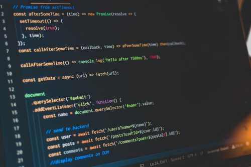

A Brief Introduction
I am a self-taught (self-directed and self-motivated) full stack web developer. I specialize in JavaScript/TypeScript on the front- and back-ends. I understand that no matter how much I know and learn about software development, what I do know will always be eclipsed by what I don't know. But what I don't know, I know how to learn.
Born and raised in Toronto, I struggled to find my calling after graduating university. Two years ago, after packing in my final attempt at making a living from electronic day-trading, I dove head-first into the world of software development, with a focus on web development. Having a good understanding of how best to learn new things, I knew the best way to start was by building a solid foundation.
I started with foundational computer science concepts to help me understand what the computer was up to under the hood, and how to measure the performance of executed code. I then applied this ground-up approach to every new concept and technology I encountered on my way to becoming a skilled web developer.
I truly enjoy encountering new technologies, new ways of thinking, and new approaches to solving problems with technology. I am constantly on the search to expand my knowledge and abilities, and to figure out new ways of providing value to end-users and potential employers.
Core Skill Set
- HTML5
- CSS3 + SASS
- JavaScript (including ES2015+)
- TypeScript
- NodeJS + Express
- React (including 16.8) + Redux
- NoSQL (MongoDB)
- SQL (MySQL)
- Java SE 11
- Android development (beginner)
Next Steps — Having completed a comprehensive course on Java SE, I have begun studying Android development with Android Studio. I will also be adding Angular and Python to my repertoire in order to expand the job opportunities available to me.
Projects
WeeWur
WeeWur is a production-grade, full-scale web application that was conceived, designed, and built entirely by me. Its purpose is to give people the ability to easily share photos and videos between themselves when they are out together at casual and formal events by creating private, shared albums.
WeeWur's front-end has been built using React, React Router, and Redux, written in TypeScript. The back-end was built with NodeJS using the Express framework, also written in TypeScript, behind a PM2 cluster.
I chose MongoDB as my database because of how well NoSQL plays with JavaScript, my knowledge of optimizing document stores, and for its easy horizontal scalability (sharding) should WeeWur grow to require such scaling.
Particularly notable features include: highly scalable image and video processing, database caching layer with Redis, strong security measures (csrf and xss protection, rate limiting, one-way (salted) password hashing, CSP, etc.), real-time client-side notifications using Server Sent Events, mobile push notifications using the Push API, third-party OAuth integration, and client-side code-splitting.
I have commercial aspirations for WeeWur, so I cannot make my entire codebase available publicly, but I will be more than happy to talk about how I implemented any features of interest to you, and share code-snippets if requested.
If you wish to look around and try out the WeeWur platform, I have set up a dummy account that you can use:
Username: "full.stack659" — Password: "Demo1234"
Feel free to click around and upload photos and videos (you can delete them after). Much of WeeWur's functionality comes from interactions with others, but you should be able to get a feel for what I've made.
React Proforma
React Proforma is a full-featured React forms library designed to help developers easily build their web forms. There isn't much demand for yet another React forms library, but I built it anyway as a show-piece for my abilities, and for use in my own projects.
There are many React forms libraries out there, with Formik taking the lion's share of the market, but I wasn't quite happy using any of the options out there for my own projects.
Because of that, I decided to build React Proforma as a proper, publishable package, complete with a comprehensive readme and video tutorial.
Particularly notable features include: fully documented (JSDoc style), strong unit-testing using Jest and React Testing Library, CI/CD through Coveralls, and advanced React concepts and design.
My hope is that a substantial library like React Proforma adequately demonstrates my abilities with React, TypeScript, testing and documenting my code, CI/CD, and version control with Git.
Mq Styled Components
Mq Styled Components is a small library designed to be integrated with the Styled Components css-in-js package. It stores customizable breakpoints, and returns a media query string for a given breakpoint that gets embedded into a component's style rules template string.
This is a very small convenience library, built with similar motivations to React Proforma above.
While I do find it useful, I built it as a full publishable package mainly to demonstrate my abilities and knowledge of web development tooling.
Particularly notable features include: fully documented (JSDoc style), strong unit-testing using Jest, CI/CD through Coveralls, and object-oriented design.